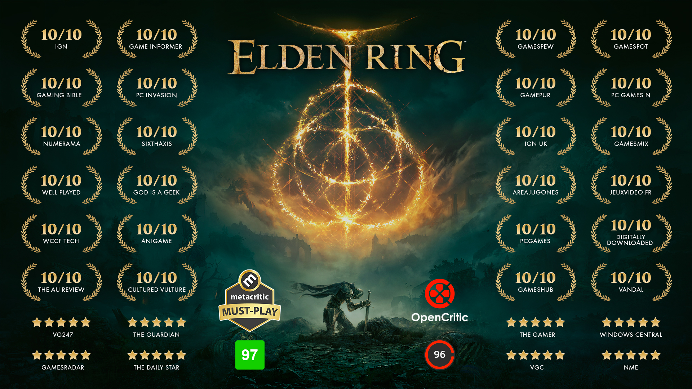

Images & Videos
-
Index-banner van peakpx.com
Link naar origineel artikel op peakpx.com -
Shardbearers-banner van uhdpaper.com
Link naar origineel artikel op uhdpaper.com -
 Review-banner van aggronaut.com
Link naar origineel artikel op aggronaut.com -

Webshop-banner van uhdpaper.com
Link naar origineel artikel op uhdpaper.com -

Sources-banner van gamesradar.com
Link naar origineel artikel op gamesradar.com -

Alle shardbearer images zijn van van eldenring.fandom.com
Link naar overkoepeld artikel op eldenring.fandom.com -

Alle webshop images zijn van van store.bandainamcoent.eu
Link naar de webshop van bandai namco, uitgever van Elden Ring -

De achtergrond image onder iedere pagina zijn van wallpapercave.com
Link naar origineel artikel op wallpapercave.com -
Alle videos op de home pagina zijn van en.bandainamcoent.eu
Link naar het originele artikel van bandai namco -
Het icoontje die gebruikt wordt voor iedere pagina van reddit.com
Link naar het originele artikel, van reddit